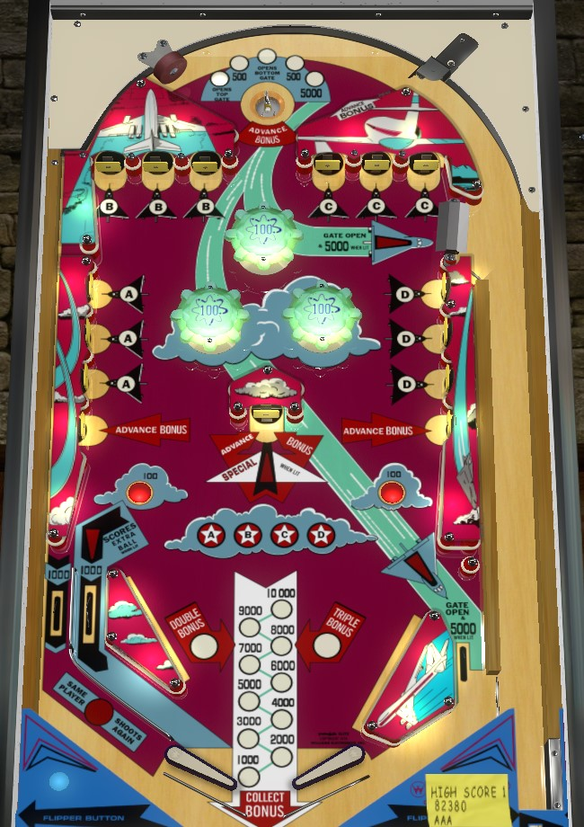

Strato-Flite is the 4-player version. Super-Flite is the otherwise identical 2-player version.
On the plunge, try to hit the side walls of the upper funnel such that the ball enters the top saucer when lit for Opens Top Gate or Opens Bottom Gate rather than just points. Light triple bonus by hitting all three standup targets in any two of the four letter sets (A-B-C-D). Max out the bonus with the center standup target or the bottommost standup targets on each side. Once bonus is maxed and tripled, there aren't many ways to continue scoring points. Completing 2 letters lights the left in lane for extra ball. Completing all 4 letters lights the center standup target for special.
Switches in the walls on either side of the funnel toward the top saucer score 100 points and rotate the value lit at the top saucer. The right side wall of the funnel also scores a bonus advance per hit. The saucer itself has 5 possible values: Open Top Gate, 500 points, Open Bottom Gate, 500 points, or 5,000 points. Opening a gate also scores 500 points, though the playfield doesn't say so. Gates are single-use return trips to the shooter lane for a replunge; using the gate scores 5,000 points. The top gate is between the C and D targets, and the bottom gate is in the right out lane.
12 standup targets around the table are labelled with A, B, C, or D: A on the middle left, B in the upper left, C in the upper right, D in the middle right. Standup targets score 50 points in the A and D banks, or 100 points in the B and C banks. A and D banks can be shot directly, but only the B and C targets furthest away in the upper corners can be shot directly; the other B and C targets require pop bumper luck or ricochets off of A and D targets. Hit a target to light it, though this does not change its point value. Lighting all 3 targets in a bank lights that letter's star in the center of the playfield. Lighting any 1 star awards 2x bonus at the end of the ball. Lighting any 2 stars awards 3x bonus and lights the left in lane for an extra ball. Lighting all 4 stars lights the center standup target for a Special.
Two additional standup targets immediately below the A and D banks on the sides of the table score 1,000 points and a bonus advance.
The left side of the table bottom is conventional. Out lane scores 1,000 points; in lane scores 1,000 points as well, and is lit for extra ball after earning 2 stars. On the right side, there is no in lane; the flipper backs up directly to the slingshot, and there is an out lane. The right out lane scores 1,000 points, unless it has been lit by opening the lower gate at the top saucer, in which case it scores 5,000 points; the lower gate can only be opened at the top saucer and closes at the end of the ball or once used.
Bonus is advanced by the right wall of the top funnel, the top saucer, and the three standup targets across the middle of the game. 2x and 3x bonus are earned by lighting 1 or 2 stars. Max bonus is 3x 10,000 = 30,000 points. Base bonus and bonus multiplier can never be carried from ball to ball. There is no mid-ball bonus collect. Bonus multipliers are never given for free.
Special can score an extra ball, 1 free game, or 2 free games, but it cannot be set to be worth points for competition/novelty play. The same is true for extra balls. In a tournament setting, both the extra ball and the special will likely be disabled outright.

All copyrighted names and terms in this document belong to their respective owners. The information provided in this document is for educational purposes only and no infringement is intended.
Back to top To game list To main page